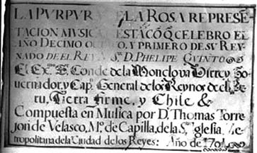
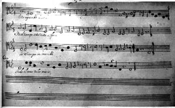

Grabación: La púrpura de la rosa
Libreto, P. Calderón de la Barca (1659); música, T. de Torrejón y Velasco (1701)
(Haz clic en los enlaces para escuchar las grabaciones)
La púrpura de la rosa fue la primera ópera que se representó en las Américas. Nueva versión de una obra de 1659, esta ópera fue comisionada por el Virrey de Perú para una celebración en 1701 por la subida al trono español de Felipe V de Borbón —de la dinastía francesa a la que pertenecía Luis XIV— tras la muerte de Carlos II, último de los Habsburgo, en 1700. Se mantuvo el libreto original, del dramaturgo Pedro Calderón de la Barca (1600-1681), pero la música fue compuesta por el renombrado compositor Tomás de Torrejón y Velasco (1644-1728), establecido en Lima desde 1667. |
|
|  |  |
La ópera es una forma teatral que debe su origen a las innovaciones de compositores y dramaturgos del siglo XVII. Las primeras óperas fueron producidas en Italia a principios de siglo —de ahí su nombre italiano— y se concibieron como complejos espectáculos teatrales que combinaban música, canto, baile y elaborados escenarios. La ópera emerge como el producto de una sociedad de corte y sirvió (como la mayoría de los objetos de arte vistos en este curso) para mostrar la influencia y poder de sus patrocinadores. La ópera también puede considerarse emblemática de la estética del barroco. Se recrea en la complejidad visual, musical y conceptual, explotando los contrastes entre diferentes voces y estilos musicales y presentando un espectáculo deslumbrante para el público. En 1659, Calderón y el compositor de la corte real, Juan Hidalgo, prepararon una elaborada ópera de tema mitológico y alegórico para celebrar la paz con los franceses y el matrimonio de la infanta María Teresa, hija de Felipe IV, con Luis XIV de Francia. Años más tarde, en 1680, un año antes de la muerte de Calderón, volvió a representarse esta ópera en el contexto de una boda real franco-española: la de Carlos II y María Luisa de Orleans (sobrina de Luis XIV). Cuando en 1701 el conde de Monclova y Virrey de Perú, Melchor Portocarrero Laso de la Vega, comisionó una nueva versión de la ópera, fue para celebrar la proclamación de Felipe V (nieto de Luis XIV y María Teresa) como rey de España tras la muerte de Carlos II. Monclova contrató al compositor más célebre del momento en las Américas, Tomás de Torrejón, probablemente alumno de Hidalgo, quien había compuesto la primera versión de la ópera. Torrejón había viajado a Lima en 1667 como paje en la corte del virrey anterior. Esta versión de la Púrpura de la rosa es un testimonio elocuente de los fuertes lazos culturales entre las Américas y Europa, por lo menos en lo que se refiere a la vida aristocrática de las cortes virreinales. La representación de la primera ópera en las Américas fue todo un acontecimiento en la corte de Lima. (Nótese que ya se habían representado zarzuelas con frecuencia en las Américas, siendo la zarzuela un género teatral en el que los actores cantaban y declamaban; en la ópera únicamente cantaban.) La historia de La púrpura de la rosa es la de Venus y Adonis, el cazador mortal del que se enamora la diosa. Los amores de Venus y Adonis provocan los celos de Marte, amante desdeñado por la diosa, y éste se venga de Adonis haciendo que un jabalí lo hiera de muerte. Al morir Adonis, su sangre tiñe de rojo las rosas blancas sobre las que cae. (Púrpura significaba "rojo" en el lenguaje poético de la época.) Júpiter, piadoso, interviene, convirtiendo a Adonis en flor y elevando a los dos amantes al Olimpo en una apoteosis final. La obra refleja el gusto en la época por las historias de la mitología grecorromana y las elaboradas alegorías sobre temas morales y sentimentales. El acompañamiento consiste en un número limitado de instrumentos de cuerda —un violín, una viola da gamba, un violón, guitarras, un laúd, y un arpa—; no se utilizan todos en todas la canciones. También hay instrumentos de percusión, y en unas pocas escenas, dos trompetas. Con la excepción de dos personajes (Desengaño y el villano Chato), todas las voces son femeninas, incluso para los personajes masculinos como Marte y Adonis, siguiendo la costumbre española del siglo XVII. (En Italia era típico emplear voces agudas para tales papeles también, aunque la norma era usar castrati, algo menos frecuente en España.) Se incluyen dos escenas aquí. La primera es la visita de Marte a la "gruta" (o cueva) del Desengaño, persiguiendo a Cupido y acompañado de un soldado llamado Dragón, un personaje cómico. Se trata de un interludio en el que intervienen cuatro personajes alegóricos: Temor, Envidia, Sospecha e Ira, los cuales tienen preso al viejo Desengaño. El tema son los efectos del desdén. Al final de la escena, los cuatro personajes alegóricos ofrecen a Marte un espejo mágico en el que ve a Venus y Adonis abrazados en unos jardines, provocando así la ira del dios de la guerra. (A los amantes les acompaña la pareja de villanos, Chato y Celfa, de la cual está enamorado Dragón.) La segunda escena tiene lugar en los mismos jardines vistos en el espejo. Venus pide que las ninfas los entretengan con una canción. Mientras los amantes cantan sobre su felicidad y la naturaleza del amor, las ninfas debaten si el amor puede aumentar la buena fortuna o no. En la gruta del Desengaño (Marte, Temor, Sospecha, Envidia, Ira); texto Llega el Desengaño (Desengaño, Marte, Temor, Sospecha, Envidia, Ira); texto El espejo del desengaño (Marte, Desengaño, Dragón, Temor, Sospecha, Envidia, Ira); texto Venus y Adonis (Venus, Adonis, Chato, Celfa); texto "No puede Amor...Sí puede Amor" (Coros de ninfas y villanos, Venus, Adonis); texto |
|
{kind=link}
{kind=link}
{kind=link}
{kind=link}
{kind=link}
{kind=link}
{kind=link}
Grabación original: The Harp Consort, intérpretes, La púrpura de la rosa (Deutsche Harmonia Mundi, 1999).